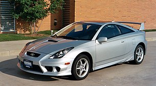

Celica (/ˈsɛlɪkə/ или /sɛˈliːkə/) (яп. トヨタ・セリカ, Toyota Serika) — спортивный автомобиль, выпускавшийся японской автопроизводительной фирмой Toyota Motor Corporation. На протяжении своей истории Celica комплектовалась разнообразными 4-цилиндровыми двигателями. Наиболее значимые изменения произошли в августе 1985 года, когда задний привод уступил место переднему. Полноприводная турбированная модель GT-Four (All-Trac[en] в США) производилась с 1985 по 1999 год. Система сдвига фаз газораспределения появилась в конце 1997 года на японских моделях (кроме GT-Four) и стала стандартной для всех рынков в 2000 году. В течение семи поколений Celica претерпела множество конструкторских и дизайнерских изменений, включая Toyota Celica Supra (позже отделившуюся в самостоятельную модель — Toyota Supra). Были доступны кузова хэтчбек, лифтбэк, а также кабриолет. Последняя Celica сошла с конвейера 20 апреля 2006 года. На этом закончилась почти 36-летняя история модели.
Первое поколениеToyota Celica A20/A30 Производитель: Toyota Годы производства: 1970—1977 Массогабаритные характеристики:Длина 4350 мм
Второе поколение
Toyota Celica A40/A50 Второе поколение увидело свет в 1978 (производство начато в конце 1977) и было доступно в двух видах кузовов — купе и лифтбэк. Кузов купе больше не был настоящим хардтопом — и купе и лифтбэк имели безрамочное стекло двери и толстую стойку задней части дверного проёма.
Подробно читайте в Википедии
Плюсы Toyota Celica
В зависимости от конкретной модификации автомобиль Toyota Celica обладает рядом неоспоримых преимуществ в сравнении с аналогами этой ценовой категории, к их числу можно отнести следующее:Минусы Toyota Celica
Перед тем, как приобрести авто, вам следует ознакомиться с отрицательными сторонами Toyota Celica, хотя они и незначительны, для некоторых пользователей они могут оказаться критичными: